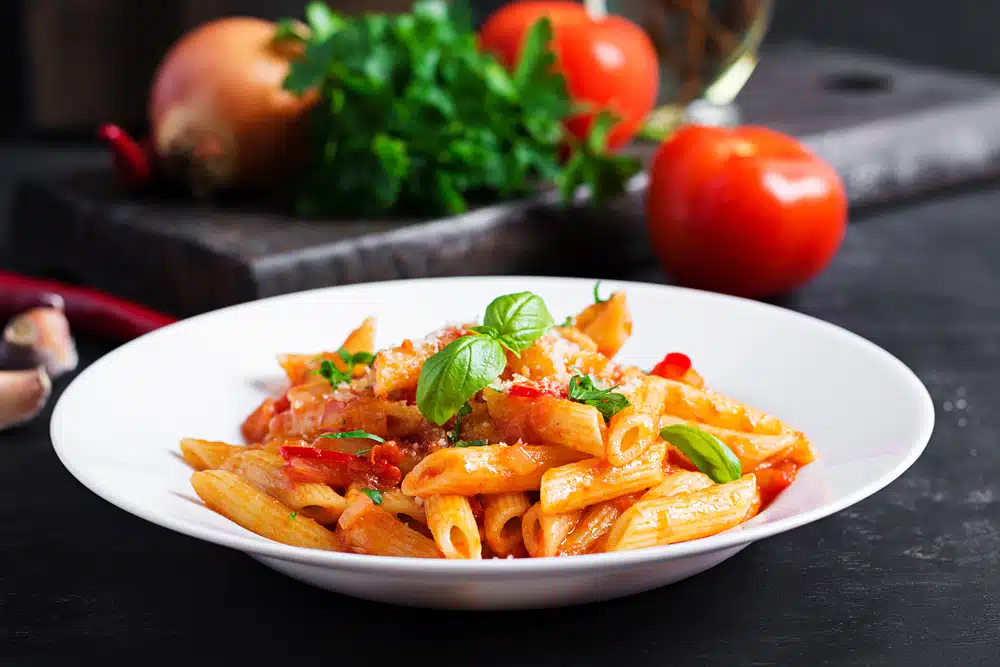
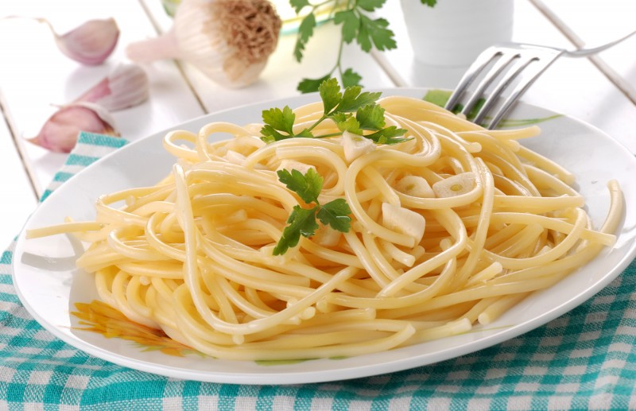
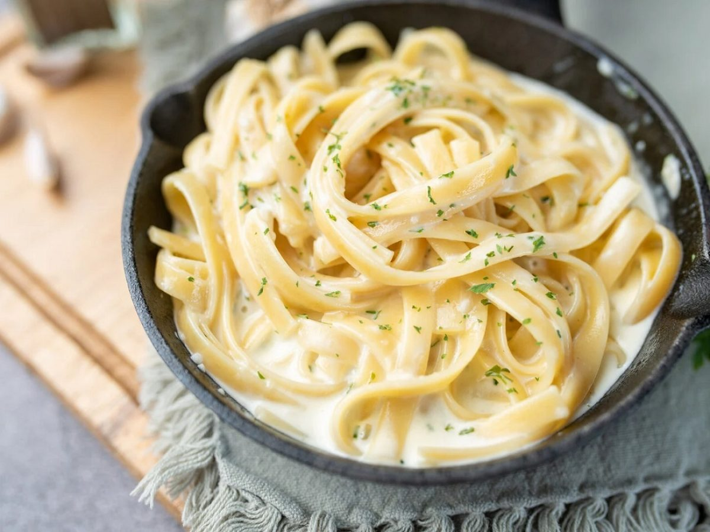

Receitas de massa fáceis
Penne ao Molho de Tomate e Manjericão

Ingredientes:
- - 200g de penne;
- - 2 tomates maduros picados;
- - 1 dente de alho picadoe;
- - 1/4 xícara de azeite de oliva;
- - Folhas de manjericão fresco;
- - Sal e pimenta a gosto;
- - Queijo parmesão (opcional).
Modo de preparo:
- 1 - Cozinhe o penne em água salgada até ficar cozido.
- 2 - Em uma frigideira, aqueça o azeite e adicione o alho. Cozinhe até dourar.
- 3 - Adicione os tomates picados, sal e pimenta e cozinhe por 5-7 minutos até que o molho engrosse um pouco.
- 4 - Misture a massa com o molho, adicione as folhas de manjericão fresco e misture bem.
- 5 - Sirva com parmesão, se desejar.
Spaghetti Aglio e Olio (Spaghetti com Alho e Óleo)

Ingredientes:
- - 200g de spaghetti;
- - 4 dentes de alho picados;
- - 1/4 xícara de azeite de oliva;
- - Pimenta vermelha em floco(opcional)
- - Sal e pimenta a gosto;
- - Salsinha picada;
- - Queijo parmesão (opcional).
Modo de preparo:
- 1 - Cozinhe o spaghetti em água salgada até ficar al dente.
- 2 - Enquanto a massa cozinha, aqueça o azeite em uma frigideira grande e adicione o alho picado. Cozinhe até dourar levemente.
- 3 - Se gostar de um toque picante, adicione os flocos de pimenta vermelha.
- 4 - Escorra a massa, reservando um pouco da água do cozimento, e misture-a na frigideira com o alho e óleo.
- 5 - Se necessário, adicione um pouco da água reservada para dar cremosidade.
- 6 - SFinalize com salsinha e queijo parmesão, se desejar.
Macarrão ao Pesto

Ingredientes:
- - 200g de pasta (fusilli, penne ou spaghetti);
- - 1 xícara de manjericão fresco;
- - 1/4 xícara de nozes ou pinoli;
- - 1/4 xícara de azeite de oliva;
- - 1 dente de alho;
- - 1/4 xícara de queijo parmesão ralado;
- - Sal e pimenta a gosto.
Modo de preparo:
- 1 - Cozinhe a massa conforme as instruções da embalagem.
- 2 - Em um processador de alimentos, misture o manjericão, as nozes, o alho, o queijo e o azeite. Processe até obter uma pasta.
- 3 - Quando a massa estiver pronta, escorra e reserve um pouco da água do cozimento.
- 4 - Misture o pesto à massa, ajustando a consistência com a água reservada, se necessário.
- 5 - Tempere com sal, pimenta e adicione um pouco mais de parmesão, se gostar.
Fettuccine Alfredo

Ingredientes:
- - 200g de fettuccine;
- - 1/2 xícara de creme de leite;
- - 1/2 xícara de queijo parmesão ralado;
- - 2 colheres de sopa de manteiga;
- - Sal e pimenta a gosto;
Modo de preparo:
- 1 - Cozinhe o fettuccine conforme as instruções da embalagem.
- 2 - Em uma panela, derreta a manteiga e adicione o creme de leite. Deixe cozinhar por 2-3 minutos em fogo baixo.
- 3 - Adicione o queijo parmesão e mexa até o molho engrossar.
- 4 -Misture a massa cozida ao molho, ajustando com um pouco da água do cozimento, se necessário.
- 5 - Tempere com sal e pimenta e sirva imediatamente.